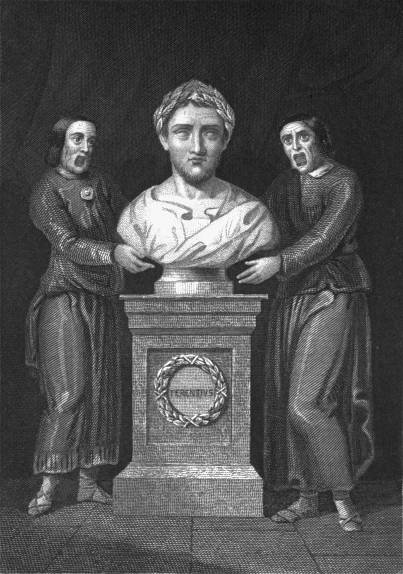
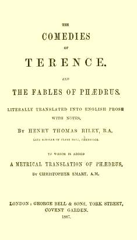
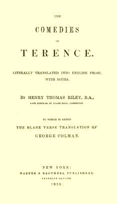
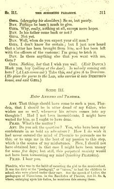
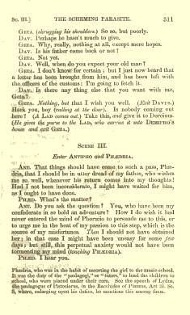

This e-text includes characters that will only display in UTF-8 (Unicode) file encoding, including a few words in accented Greek:
συρίσκος
Œ, œ (“oe” ligature)
If any of these characters do not display properly, or if the apostrophes and quotation marks in this paragraph appear as garbage, you may have an incompatible browser or unavailable fonts. First, make sure that the browser’s “character set” or “file encoding” is set to Unicode (UTF-8). You may also need to change your browser’s default font. All Greek words have mouse-hover transliterations: συρίσκος. Typographical errors are similarly noted.
This translation was published as part of a volume also containing the 1765 George Colman text. These are available as a separate e-text. For details on the Riley translation and its publishing history, including the source of the frontispiece, see the end of this file.
Italics in the translation indicate text added by the translator, not present in the Latin original.

|
CÆSAR. VIRGIL. SALLUST. HORACE. TERENCE. TACITUS. 2 Vols. LIVY. 2 Vols. CICERO’S ORATIONS. CICERO’S OFFICES, LÆLIUS, CATO MAJOR, PARADOXES, SCIPIO’S DREAM, LETTER TO QUINTUS. CICERO ON ORATORY AND ORATORS. |
CICERO’S TUSCULAN DISPUTATIONS, THE NATURE OF THE GODS, AND THE COMMONWEALTH. JUVENAL.XENOPHON. HOMER’S ILIAD. HOMER’S ODYSSEY. HERODOTUS. DEMOSTHENES. 2 Vols. THUCYDIDES. ÆSCHYLUS. SOPHOCLES. EURIPIDES. 2 Vols. |
|
PLATO (SELECT DIALOGUES). |
|
 The above works are for sale by all
booksellers, or they will be sent by Harper
& Brothers to any address on receipt of price as quoted. If
ordered sent by mail, 10 per cent. should be added to the price to cover
cost of postage.
The above works are for sale by all
booksellers, or they will be sent by Harper
& Brothers to any address on receipt of price as quoted. If
ordered sent by mail, 10 per cent. should be added to the price to cover
cost of postage.
In this Version of the Plays of Terence the Text of Volbehr, 1846, has been followed, with the few exceptions mentioned in the Notes.
The Translator has endeavored to convey faithfully the meaning of the author, and although not rigorously literal, he has, he trusts, avoided such wild departures from the text as are found in the versions of Echard, Cooke, Patrick, and Gordon.
The plays are grouped two by two in separate files. Each is free-standing except for occasional links (optional) to other plays. If you choose not to download all three files, make sure you do download the file called “terence.css”.
| 1 | |
| 63 | |
| 132 | |
| 197 | |
| 254 | |
| 301 |
The comedies of Terence, translated by Henry Thomas Riley (1816-1878, B.A. 1840, M.A. 1859), were originally published in 1853 as part of Bohn’s Classical Library.
The series was later sold to Bell & Daldy, which became George Bell & sons; it is almost certain that the 1887 edition shown here was set from the original 1853 plates. The text appeared in an omnibus volume also containing two translations of the fables of Phaedrus: Riley’s own, and those of Christopher Smart (1765).
The 1859 Harper’s edition—issued during Riley’s lifetime—omitted the Phaedrus translations. Instead it added George Colman’s translation of Terence, coincidentally also from 1765. Only the translations themselves were included, not the notes and commentary quoted by Riley in his own notes.
The Harper’s edition differs from Bell/Bohn in a few minor points of spelling and punctuation, but it is very nearly a typographic facsimile of the London original. Readers who are familiar with the American edition of Riley’s translation of Ovid’s Metamorphoses should be reassured to learn that the present text seems to have been much more carefully composed and typeset.
|
London 1853/1887 |
New York 1859 |
|---|---|
|  |  |
|
Both title pages were wholly capitalized. In the transcription, lines printed in smaller type are shown as lower case. |
|
|
The And |
The |
|
Literally Translated into English Prose, with Notes. By HENRY THOMAS RILEY, B.A., |
Literally Translated into English Prose, with Notes. By HENRY THOMAS RILEY, B.A., |
|
To Which is Added |
To Which is Added |
|
London: George Bell & Sons, York Street, |
New York: |
|  |  |
|
This page from late in the volume shows how closely the New York edition followed the physical format of the London original. |
|
The frontispiece shown at the beginning of this e-text is taken from the Bell/Bohn edition; it is absent from the New York edition. The New York edition also omitted all illustrations—including a similar frontispiece—from the Colman text.